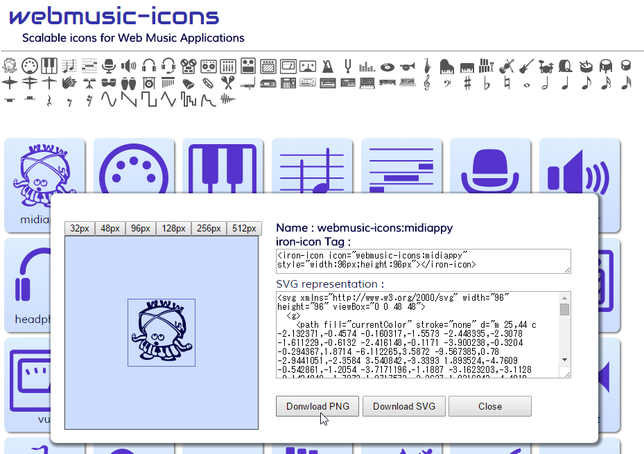

If you want to use these icons just as simple PNG or SVG file, click the icon in the list and download the PNG/SVG image file (This function is available for Chrome / Firefox / Edge only).

Following steps are for 'iron-icon' tag usage.
2. Install 'webmusic-icons.html' and depended files.
webmusic-icons is a Polymer's custom icons with iron-iconset-svg.
Though it need some preparation to use, icons can be used with simple <iron-icon> tag.
If you use bower, use the command below. It automatically solve the dependency and place files to 'bower_components' folder :
> bower install --save webmusic-icons
Otherwise,
download 'webmusic-icons.html' from this link : webmusic-icons.html
Add script & link tags for polymer, iron-icon, iron-iconset-svg and webmusic-icons to your HTML.
In this description, all of the components assumes be placed under 'bower_components' folder by bower command.
To the extent possible under law,
g200kg
has waived all copyright and related or neighboring rights to
webmusic-icons.
This work is published from:
Japan.